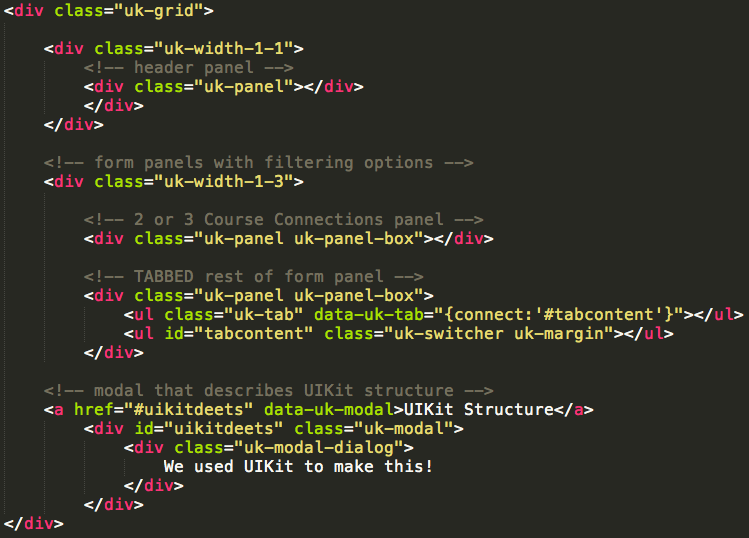

-
-
- Creative Arts
- MUSC 272 African American Originals I: Spirituals, Blues and All That Jazz
- MUSC 273 African American Originals II: Rhythm and Blues, Rock and Contemporary Jazz
-
- History
- HIST 209 African American History to 1877
- HIST 210 African American History: 1877 to the Present
-
- Social Sciences
- SOC 230 Race and Ethnicity
- WGS 315 Black Feminist Theory
-
- Creative Arts
- MUSC 212 World Music: Africa and the Americas
- MUSC 222 West African Mande Dance and Music
-
- History
- HIST 143 Africans on Africa: A Survey
- Humanities
- ARTH 212 African Visual Cultures
- ARTH 312 Resistance, Memory and Hope in African Arts
- ENG 245 African Literature
- Social Sciences
- ANTH 225 Peoples and Cultures of Africa
- ANTH 255, WGS 255 Peoples and Cultures of Africa
- POLS 203 African Politics
-
- Art History
- ARTH 274 Visualizing Ancient Rome
- History
- HIST 111History of Europe to 1000 CE
-
-
- Biology
- BIO 112 Cells and Genes
-
- Economics
- ECON 112 Introduction to Microeconomics
UIKit Structure
UIKit allows you to format your website according to a basic grid. You section off blocks of specific widths (say, three blocks each 1/3 of your screen width, or one block that fills up 100% of your screen width) and then fill in those grid cells with content.
What we chose to do here with our grid was to follow a basic two-column layout, with a single header at the top. Each grid cell is filled in with a UIKit component called a panel, which essentially formats your cell to look like those nice boxes we've got back there.
We used a lot of other cool UIKit components, not just stylistic ones, but also javascript components that interface with our style choices. For example, UIKit tabs is the style/navigation component you see that divides the filtering categories for which connections you want (Divison, Department, Semester, and Course). This styling component then interfaces with a UIKit javascript component called switcher which allows us to display different content blocks depending on which tab we've selected. This lets us split up our form into sections that you only see one at a time, and is easier for the user to digest than one long form.
The same technique is used with our filtered results column on the left. UIKit allows us to link each letter of the alphabet with a separte list of the connections that start with that that letter. Each of those connections in turn is linked to the complete description panel that renders all the courses available for a specific connection. Voila, and only the selected category is displayed.
The nifty think about the UIKit framework is that although our website clearly utilizes tons of css styling and javascript, we didn't have to write much CSS or javascript at all. It's all managed for us through UIKit with the use of classes. Anytime we want to apply a UIKit component, whether it be CSS styling or javascript animations, we simply apply the correct UIKit class to our div (or span or paragraph or whatever) and that's it!
To learn more about UIKit and how to utilize it, we highly recommend checking out their website. They have detailed descriptions and examples (both the code and the visual) that we found very easy to follow along.
Below is a skeleton outline that demonstrates the structure of our webpage:
